Manajemen
Dewan Komisaris
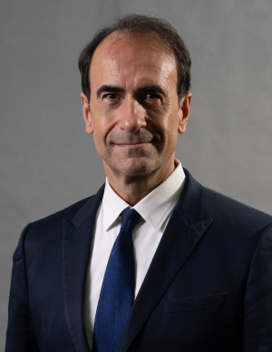
Roberto Callieri
Komisaris Utama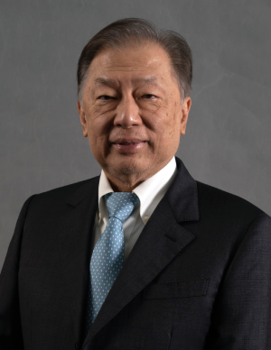
Tedy Djuhar
Wakil Komisaris Utama/Komisaris Independen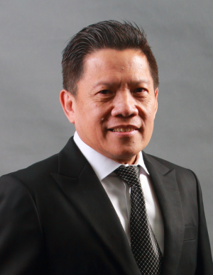
Simon Subrata
Wakil Komisaris Utama/Komisaris Independen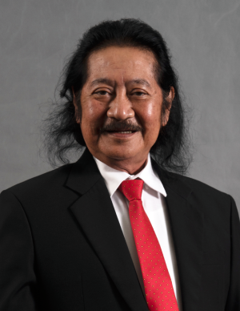
Franciscus Welirang
Komisaris Independen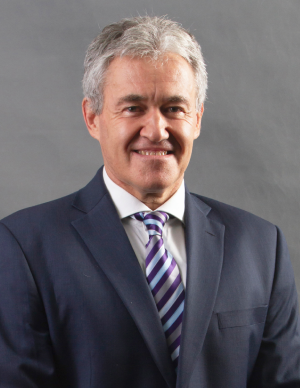
Juan Francisco Defalque
Komisaris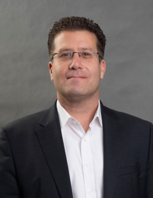
René Samir Aldach
KomisarisSuharso Monoarfa
KomisarisDireksi
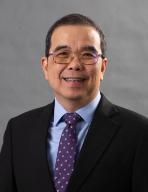
Christian Kartawijaya
Direktur UtamaWarga negara Indonesia, usia 58 tahun. Beliau menjabat sebagai Direktur Utama Perseroan sejak 1 Mei 2014. Meraih gelar Sarjana Teknik Sipil dari Universitas Trisakti, Magister Administrasi Bisnis dari San Diego University, dan Master of Arts in Christian Education (M.A.C.E) dari Fort Worth, Texas.
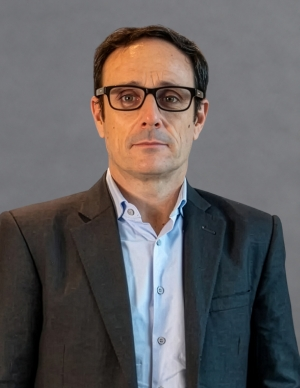
Jose Maria Magrina Vadillo
Wakil Direktur UtamaJose Maria Magrina Vadillo berkewarganegaraan Spanyol. Beliau meraih gelar Insinyur Organisasi Industri dari Universitat Politècnica de Catalunya serta gelar International Master of Business Administration (IMBA) dengan konsentrasi Pemasaran dan Keuangan dari Instituto de Empresa.
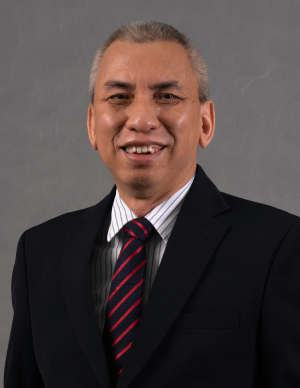
Troy Dartojo Soputro
DirekturWarga negara Indonesia, usia 61 tahun. Beliau menjabat sebagai Direktur Perseroan sejak 4 Desember 2015. Meraih gelar Sarjana Teknik Sipil dari Universitas Atma Jaya Yogyakarta, Magister Administrasi Bisnis dari University of Portland.
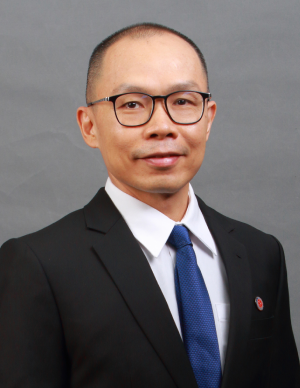
Oey Marcos
DirekturWarga negara Indonesia, usia 53 tahun. Beliau menjabat sebagai Direktur Perseroan sejak 4 Juni 2018. Meraih gelar Sarjana Ekonomi jurusan Akuntasi dari Universitas Trisakti, Magister Manajemen di Bidang Bisnis Strategis dari Institute Business and Management Prasetia Mulya.
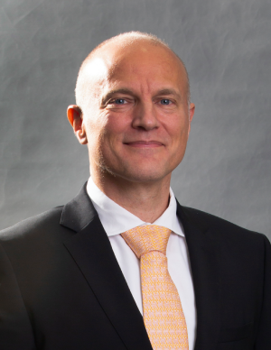
Holger Mørch
DirekturWarga negara Denmark, usia 56. Beliau menjabat sebagai Direktur Perseroan sejak 17 Mei 2023. Beliau meraih gelar Sarjana Sains dari Technology Management and Marine Engineering Svendborg Mariene Engineer Academy, gelar Diploma Ekonomi Bisnis dari University of Southern Denmark dan gelar Magister Administrasi Bisnis dari University of Bradford.
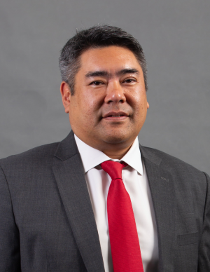
Sunnira Ly
DirekturWarga negara Perancis, usia 51 tahun. Beliau menjabat sebagai Direktur Perseroan sejak 4 Desember 2024. Meraih gelar master di bidang manajemen industri dari ESC Lille, sebelumnya menjabat sebagai Wakil Direktur Utama bidang Keuangan di Heidelberg Materials Kanada.
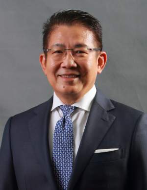
Benny Setiawan Santoso
DirekturWarga negara Indonesia, usia 67 tahun. Beliau menjabat sebagai Wakil Direktur Utama Perseroan sejak 8 Juli 2021. Meraih gelar Diploma Bisnis dari Ngee Ann Collage. Sebelumnya, beliau pernah menjabat sebagai Direktur Indofood Agri Resources Ltd. dan Komisaris Utama PT Indoritel Makmur Internasional Tbk.